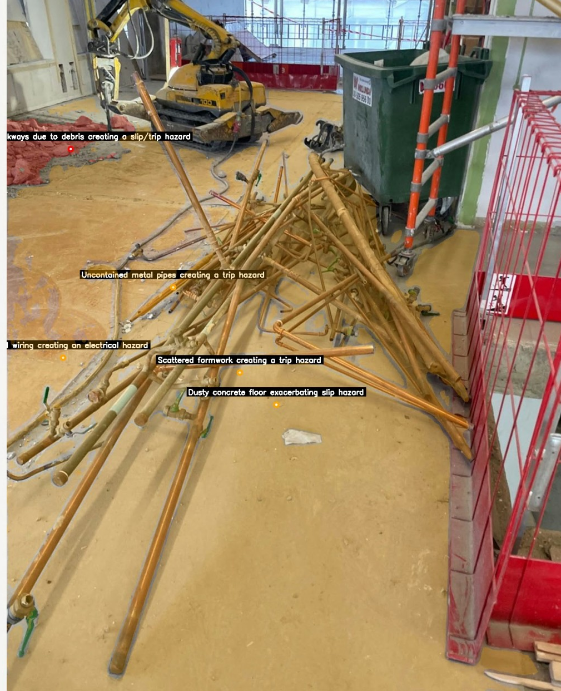
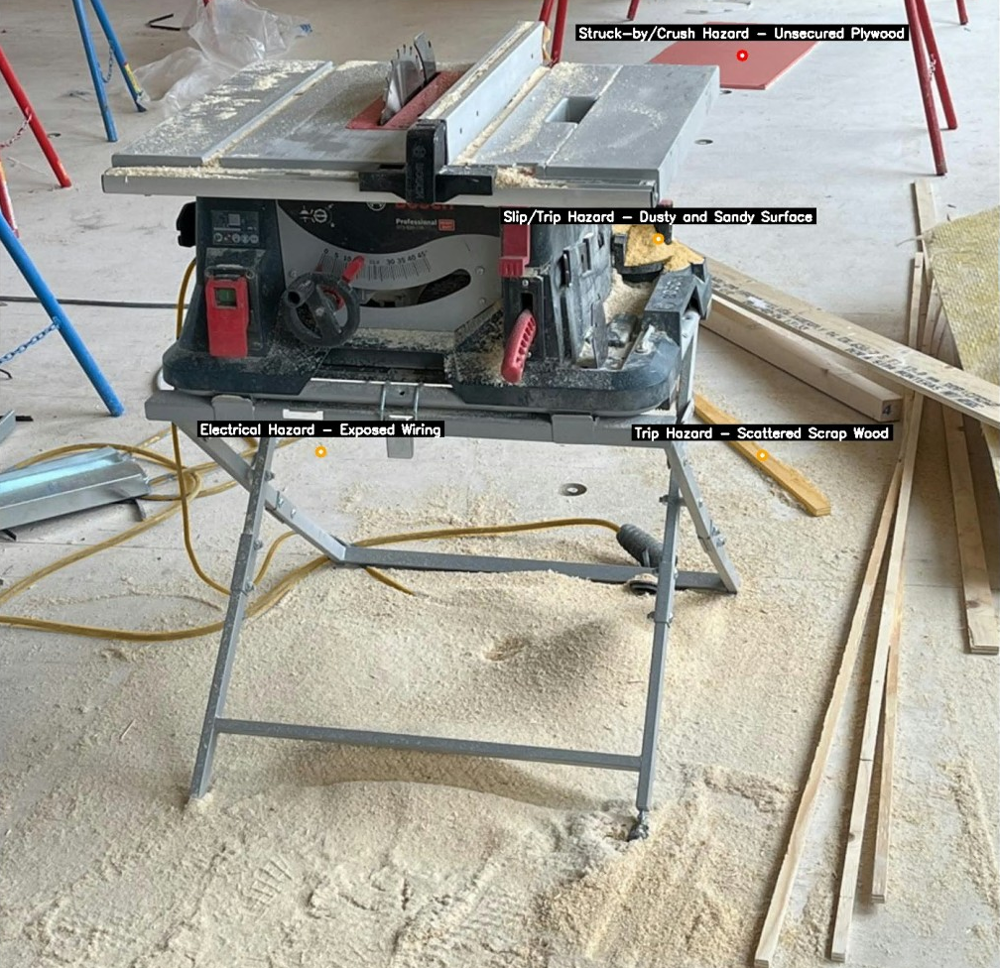
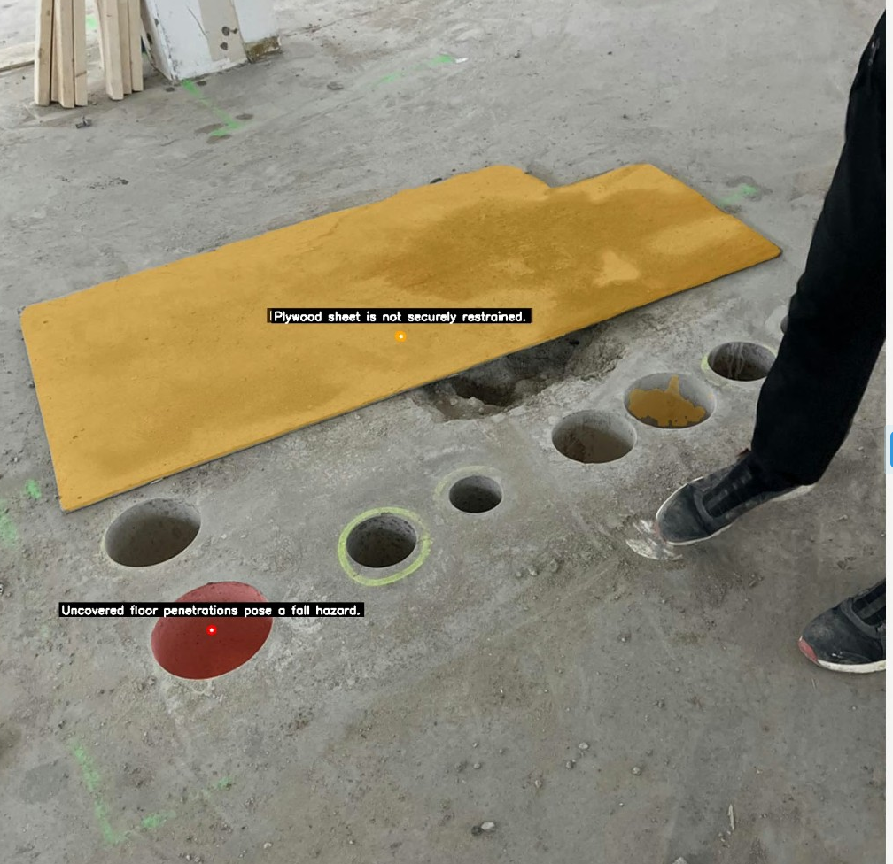
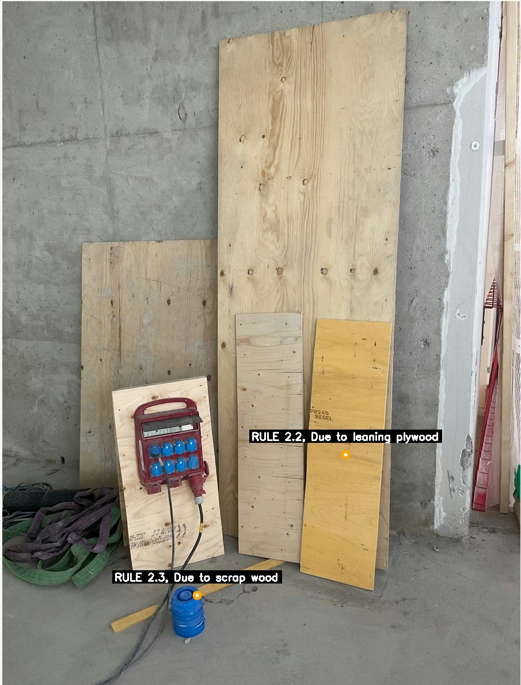
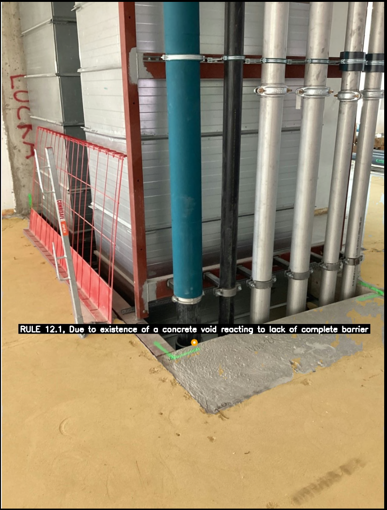
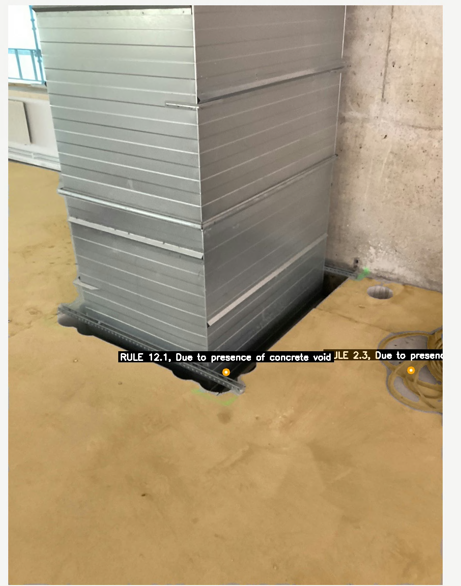

Construction sites are highly dynamic and mentally demanding work environments. In 2022, Canada recorded 28,512 lost-time injuries in the construction sector. Because the majority of these claims were linked to struck-by hazards, researchers argue that the inherent dynamism of construction sites reduces situational awareness, making hazard identification exceedingly difficult. A proposed method for mitigating these effects is the deployment of rapid-tempo attention cycles facilitated by artificial intelligence (AI). Although many out-of-the-box models possess basic vision-reasoning capabilities, successful workplace adoption requires high levels of accuracy, rendering general models unsuitable for direct workflow integration. However, as demonstrated in recent benchmarks, hybrid approaches combining specialized models can achieve human-level accuracy. In this paper, we present and benchmark GEMMS, a novel hybrid vision-language model coupling Gemma 3 and Segment Anything 3 (SAM3) for automated site safety auditing. This study specifically evaluates GEMMS's accuracy in detecting safety issues across different photographic capture styles. Our findings indicate that while highly accurate, autonomous hazard prediction is possible using intentional focal imagery, the processing of passive 360-degree imagery currently requires semi-autonomous interaction to be effectively utilized in safety workflows.
1. Introduction
Construction sites, characterised as dynamic and fast paced spaces by [1], are mentally demanding work environments([2],[3],[4]). Data from [5] presents that, Canada in 2022 has recorded 28512 lost time injuries in construction sector while in United Kingdom a majority of the claims are identified as struck-by hazard by [6]. Further investigating factors contributing struck-by hazards,[1] and [6] found dynamism as a major factor on struck-by hazards through making it harder to identify safety issues and severing situational awareness. According to [2] and [7] fast feedback loops equipped with continuous shifts of attention could mitigate dynamism's effects, while [8] and [4] claims through use emergent technologies like artificial intelligence we can achieve fast feedback loops.
As research from [9] and [10] shows, AI adoption in real-world workflows is dependent on accuracy of a model. Although general purpose artificial intelligence models such as Gemini 2.5 can explain scenes and detect objects([11]), [12] found Gemini 2.5 to be very inaccurate for object identification compared to humans. When [12] benchmarked their Segment Anything 3 Unified Foundation Model(SAM3), SAM3 alone performed worse than humans while utilisation of SAM3 with reasoning and vision capable models like Gemini 2.5 managed to produce better results than humans. However, since object identification is just a step in issue identification([6]) and SAM3 lacks reasoning abilities([12]), without a model capable of visual reasoning it cannot identify safety issues. We consider Gemma 3 to be a more suitable reasoning model due to being built for visual reasoning, unlike Gemini 2.5 which is a large language model with vision capabilities([13],[11]).
Primary objective of this research is to develop and validate our hybrid AI model GEMMS as a potential safety auditing automation tool for site managers. Specifically, this study focuses on benchmarking GEMMS against labeled focal images and then passive 360 imagery for autonomous identification of struck-by hazards, which remain the leading cause of severe construction injuries([5],[1]).
2. Background
2.1 Human Limitation
The construction industry operates within an extremely dynamic environment which makes prediction of even moderately distant futures a subject to continuous reassessment([2],[7],[1]). Despite rigorous safety protocols, construction sites remain prone to unplanned events that disrupt workflow and cause injury ([6]). Accident causation frameworks, such as the Domino Theory and Human Factors Theory, posit that accidents result from a sequence of events triggered by unsafe conditions or behaviours ([6]) hence the removal of any single factor, specifically during identification phase for unsafe conditions should break the sequence and prevent an incident. However, empirical data from [5], suggests a persistent failure in this identification process with the industry recording 28,512 lost-time injuries in Canada alone. Building on top of that, statistics from United Kingdom highlights that "struck-by" incidents, falls from height, and "trapped/caught-in-between" events as the dominant causes of severe injury [6]. Adding on, [6] argues that causation of these incidents has a direct link to lack of situational awareness caused by dynamism of construction sites.
According to [14]'s Cognitive Load Theory (CLT), mental effort required to process chaotic visual data (dynamic environments) creates cognitive load in a form of cognitive waste that diverts attention from task execution, which indicates that when a manager scans a site, high visual complexity competes for limited cognitive resources. A study by [1], utilizing eye-tracking metrics demonstrate that as visual complexity increases, fixation durations shorten and error rates rise; effectively, the brain prioritizes visual tracking over hazard identification. This could result in a critical safety gap where immediate causes of accidents (e.g., missing guardrails, proximity to moving machinery) are often visible but cognitively "invisible" to an overloaded manager. The inability to filter this visual noise impairs situational awareness([6]), leading to a decision to perform work regardless of unsafe conditions. Therefore it could be argued that mitigating site safety issues requires not only the enforcement of rules but the reduction of the visual processing load placed on site management.
2.2 Faster Feedback Loops with Artificial Intelligence
According to [2] and [7], utilisation of faster feedback loops to achieve continuous shifts of attention could reduce dynamism related cognitive load and [4] highlights this solution as rapid tempo attention cycles while also proposing emergent technologies as a potential way to achieve it. Further building on this idea, [8] proposes artificial intelligence and machine learning assisted interactive control, to be an emergent technology which can create rapid tempo attention cycles. While traditional methods of management is bound to information processing limitations and cognitive biases of human psyche([15],[16]), AI systems can process and synthesize larger amounts of real time data from diverse sources([17]). By adopting AI as a cognitive prosthetic, according to [18], we might reduce overload through filtering of noise and identifying decision relevant safety signals that would otherwise be lost. This mechanism facilitates an open internal dialogue according to [19] and [8], which allows for a structural distribution of attention rather than relying on an individuals sole judgmental skills which may have been over exhausted by their work routine. Consequently, safety management shifts from a static compliance task to a dynamic, predictive capability that minimizes waste and maximizes worker safety. However as [9] and [10] points out that, AI adoption is found to have direct relation with the accuracy of a model, modern models are still far behind human levels of accuracy ([12]).
2.3 Hybrid Artificial Intelligence Models
A paper by [12] while presenting their new Unified Foundational Model called Segment Anything 3(SAM3), conducts a milestone benchmark. According to their data, given a static image of a dynamic environment, humans are 72.8 percent accurate in identifying and segmenting objects from a given noun, while the best out of the box model benchmarked on the test( which was SAM3) was only 54.1 percent accurate. Although SAM3 is not reasoning capable([12]), coupling SAM3 with a large language model with vision capabilities, in particularly with Gemini 2.5, to create more complex nouns based on the scene has resulted in 77 percent accuracy overall in the same sample group([12]). However as object identification is just a part of issue detection, we require a model that can also visually reason.
As Gemini 2.5 utilises an older and smaller version of Gemma for its vision capabilities([11]), utilising a newer model like Gemma 3, which is a vision language model with spatial reasoning capabilities ([13]), could be more suitable for issue detection as it is fine tuned specifically for spatial reasoning and performs a higher rate of accuracy according to [13]. Also while being a lighter approach than Gemini 2.5, it does not carry some overheads that comes with general purpose nature of Gemini 2.5([11]) while also requiring less computational power. Building on, as this hybrid approach would be able to anchor its reasoning through the findings of SAM3, tracing the chain of thought for issue validation and further fine tuning for this approach would be possible. Through additional training on SAM3, which is an open door left within the [12], construction specific terminology and tools could be further reinforced, adding on the reliability of the overall system.
3. Methodology
3.1 GEMMS Architecture
Our hybrid model called GEMMS is a combination of Gemma 3 and Segment Anything 3. Our design stems from the accuracy achieved through hybrid approaches observed on [12]. We deemed Gemma 3 to be a superior model to Gemini 2.5 due to being built directly for vision and with its lower computational overhead([13],[11]). Additionally when understood that Gemini utilises Gemma as its vision capable side, utilising Gemma alone meant more direct control over the software while having a lower computational overhead([13]).
In this approach Gemma serves as spatial context generation tool while SAM verifies the findings presented by Gemma. For instance, from a given image, Gemma would start by explaining the scene to it itself. Then through our set of safety protocols built in as an iterative step by step evaluation prompt, it creates hypothesises about potential issues it deems as existent. Then it gives multiple complex nouns to SAM for verifying the objects in relation to detected issues. After checking if locations of said objects are matching with the hypothesis, Gemma then further questions SAM to verify other crucial elements that also is a part of this issue. Example being Gemma sees a construction site with a drop like area where guardrailing is present while it suspects that its missing a toeboard. It would question SAM on the existence of guardrailing in the area it deemed the guardrailing should have existed, then it queries SAM regarding to if there is a toeboard on the scene. If the board is not visible to SAM in the desired location, a location it derived from the segmented area of guardrails, it concludes that this is an illegal guardrail since the drop and the missing toeboard could result in falling debris.
3.2 Focal and 360 Imagery
As GEMMS utilises photographic input as its initial context, we must now define two different photographic capture styles. The style we refer to as focal imagery consists of images taken from a real construction site during a safety inspection by an auditor. Particularly, we are working with data from the Lumi renovation project in Uppsala. According to [20], this site successfully achieved Total BIM by replacing static documents with dynamic, object-linked digital checklists via the StreamBIM platform. This specific digital workflow inherently generated the rich artifacts we use to construct our dataset. Because these images were initially captured as spatial markers within StreamBIM, this focal imagery is embedded within the site's BCF (BIM Collaboration Format) data. Consequently, alongside the images, we have direct access to the corresponding issues written by safety inspectors, as well as precise data regarding where each issue lies in the BIM coordinate space.
Our second photographic style is 360-degree imagery. Lumi project utilized 360-degree site walks to leverage tools such as OpenSpace. Although this data did not natively share the exact coordinate space of the 3D BIM model, it utilised a coordinate system based on the 2D floor plan. By translating between these two systems, we generated a new dataset where the 360-degree images were anchored directly to the BIM coordinate space. Utilising the issue coordinates from the BCF files, we were then able to map corresponding 360-degree images to the exact locations of pinpointed safety issues.
3.3 Assessment Method
Our assessment is divided into two categories based on the input type: Focal Imagery and 360 Imagery. Because focal imagery is captured with the explicit intent of documenting a specific issue, the problem is typically centered and prominent within the frame. In contrast, 360-degree imagery captures the entire environment, meaning the safety issue may be located peripherally or at a distance.
After processing these images through GEMMS, we manually evaluate each image's AI-generated label against its original counterpart. This manual evaluation is necessary because some of the original issue descriptions provided by auditors and workers do tend to vary in explicit detail, making automated string-matching comparisons unreliable. We have separated our marking into three distinct categories:
Positive: GEMMS correctly matched the ground-truth issue without any hallucinations. This category also includes additionally identified issues that we deemed correct upon our own manual inspection of the images.
Overshot Positive: GEMMS successfully identified valid issues but also made at least one false assumption or hallucination regarding the image.
Negative: GEMMS failed to identify a valid problem within a given image, despite the ground-truth label explicitly noting an issue.
3.4 Experiment Design
In the beginning, GEMMS is fed with information based on [6]'s issue categorisation and ways to prevent them. We compiled a category of violations, steps to validate and check them for Gemma's thinking chain. After we feed our images into GEMMS, it produces an investigator log book with a detailed thought chain and a verdict book where the issue and its description is written. After cross comparing results to images and labels we determine the category this result belongs into.
3.5 Dataset
Our dataset is composed of 2030 safety issues detected within Lumi project. Out of these issues we have filtered down to 649 issues which were related to a wider defined category of issues based on struck by hazards. Our interpretation of struck-by category derives from [6]'s definition of the topic while additionally also covering tripping and falling hazards too. Hence it covers being hit by an object from any direction and any means such as, struck by a rolling, swinging, falling and flying objects. Which in return resulted us covering 74.6 percent of major injury causes in construction defined by [6].
Each of our 649 issues contained a focal image that represented the issue before it was resolved. Although these issues did not have 360 images attached to them initially, we had access to site walk recordings where a 360 camera was mounted on top of a worker's helmet as they walked around the construction site. Additionally, this data was mapped on top of a floorplan of Lumi; hence, we were able to cross-compare the issue locations to find relevant 360 images, and we ended up mapping 30 images to their respective issues. The scarcity of 360 imagery could also be attributed to the nature of the 360 data itself, where site walks for data gathering were conducted during the afternoon while checks and fixes were conducted early in the morning. Hence, the issues we were able to find were multi-day problems that were missed in between safety checks. Additionally, the capture method missed the issues most of the time, as the walks were not meant to cover the entire floorplan, but rather to give a general idea for what state the site is in. It also needs to be noted that, as our 360 images are artifacts from OpenSpace data from a real worksite, some issues might not be well visible through the corresponding 360 images; a new dataset generated with the intention of issue identification might yield clearer adoption strategies.
How GEMMS Thinks
GEMMS anchors its spatial reasoning through an iterative process. It creates an investigator log book with a detailed thought chain and a final verdict. Below is a real demonstration of how Gemma 3 and SAM3 interact to identify an issue.
investigator_log.json
{
"file": "b6a3be29-ad2f-49cb-8a4a-89fd83482845_cdv_photo_006.jpg",
"macro_context": "The image depicts an active construction site, specifically a concrete floor slab undergoing some form of modification or demolition. There are numerous circular cutouts in the concrete, suggesting core drilling has been performed...",
"leads": "The most prominent hazard is the series of uncovered circular holes in the concrete floor. These represent significant fall risks. Additionally, there's debris and broken concrete around these holes, increasing the trip hazard...",
"sam_queries": [
"core drill hole",
"plywood",
"cable"
],
"sam_evidence": "- 'core drill hole' found at coordinates: [769.52, 1451.53, 860.28, 1547.03]\n- 'plywood' found at coordinates: [550.83, 865.55, 1398.26, 1705.36]\n- 'cable' found at coordinates: [1.91, 391.12, 1393.75, 905.31]",
"evidence_review": "The 'core drill hole' coordinates confirm multiple uncovered holes in the concrete floor. These holes are a significant hazard as they present an unprotected void. The 'plywood' coordinates indicate several boards scattered around the area, but none are covering the holes...",
"action": "FINAL_VERDICT"
}
The GEMMS Pipeline
The core algorithm operates as a dual-model architecture. SAM3 acts as the "Retina," scanning the image against a predefined site vocabulary to extract a spatial inventory. Gemma 3 acts as the "Brain," ingesting this spatial data alongside the visual frame to execute a strict 4-phase reasoning protocol (Assembly Scan, Ghost Scan, Context Filter, and Relational Reporting).
gemms_auditor.py
# --- GEMMS: Automated Safety Auditing Pipeline ---defrun_gemms_audit(image):
# 1. Initialize Models
sam3_retina = load_segmentation_model("SAM3")
gemma_brain = load_vision_language_model("Gemma-3-27b-it")
# 2. Phase 1: Semantic Scene Inventory (The Retina)
visual_inventory = []
for concept in SITE_VOCABULARY:
detections = sam3_retina.detect(image, prompt=concept, threshold=0.18)
if detections.found():
visual_inventory.append(detections.get_spatial_data())
# 3. Phase 2: Structural & Contextual Reasoning (The Brain)# Compiles the Safety Codex, Prompt Instructions, and SAM3 Inventory
audit_prompt = construct_reasoning_prompt(SITE_SAFETY_MANUAL, visual_inventory)
# Executes the 4-Phase Logic: Assembly -> Ghost -> Context -> Verdict
reasoning_output = gemma_brain.analyze(image, audit_prompt)
# 4. Parse Identified Hazards
violations = extract_json_verdicts(reasoning_output)
# 5. Visual Anchoring & Loggingfor hazard in violations:
if hazard.is_missing_component():
# If a component is missing, anchor the warning to the remaining structure
anchor = find_structural_anchor(visual_inventory, hazard)
draw_laser_annotation(image, anchor.coordinates, label="MISSING COMPONENT")
else:
# Otherwise, highlight the active physical hazard
draw_laser_annotation(image, hazard.coordinates, label=hazard.name)
return violations, annotated_image
4. Results
After processing the dataset through this configured GEMMS pipeline, the AI-identified safety issues were manually cross-referenced against the ground-truth labels and original images. The performance of the model was evaluated based on the distribution of Positive, Overshot Positive, and Negative identifications across both photographic capture styles.
Our specific combination paired the instruction-tuned Gemma 3 27B model (google/gemma-3-27b-it) as the reasoning engine with SAM 3 as the spatial verifier. Gemma 3 was loaded in BFloat16 precision to maximize memory efficiency. We utilized an NVIDIA H100 GPU with 96 GB of VRAM capacity. During processing, our peak VRAM utilization was observed at 53 GB; this overhead margin was deliberately maintained to leave room for experimentation with different parameters. The results we present were generated with Gemma's temperature set to 0.2 and a maximum generation limit of 20,000 tokens per image. For the visual counterpart, a strict confidence threshold of 0.25 was enforced on SAM 3's output scores.
Focal Imagery Performance (N=649)
Positive: 86.6% (n=562)
Overshot Positive: 11.1% (n=72)
Negative: 2.3% (n=15)
Figure 1. Distribution of GEMMS performance on Focal Imagery.
360 Imagery Performance (N=30)
Positive: 56.7% (n=17)
Overshot Positive: 10.0% (n=3)
Negative: 33.3% (n=10)
Figure 2. Distribution of GEMMS performance on 360 Imagery.
5. Discussion
The evaluation of GEMMS highlights a significant achievement in automated safety auditing. When processing focal imagery, GEMMS reached a positive identification rate of 86.6%, explicitly exceeding the human baseline accuracy of 72.8% established in the [12] benchmarks for object detection. Crucially, while the [12] benchmark focused strictly on isolated object segmentation, GEMMS successfully executed a much more complex cognitive task: semantic scene understanding, object reasoning, and hazard validation within a dynamic environment.
However, the performance discrepancy between focal imagery (86.6\%) and 360-degree imagery (56.7\%) reveals a critical challenge in applied computer vision. This drop can be largely attributed to the absence of "intentionality" in the capture process. Focal images carry an inherent photographic framing bias, a well-documented phenomenon in computer vision datasets where human photographers naturally center, scale, and isolate subjects of interest [21]. This intentional framing effectively reduces the visual complexity of the scene.
360-degree imagery, conversely, is captured passively. The task shifts from analysing a framed subject to conducting an unguided search within a chaotic background. This drastically increases visual noise and removes the spatial priors that vision models rely on, resulting in a performance drop.
5.1 Image Quality
The profound impact of photographic intentionality and subsequent image quality is visually evident when comparing the model's failures and successes. The lack of intention severely degrades performance. In negative focal examples, the capture fails to clearly highlight issues (like a manhole by the column), confusing the spatial reasoning of the AI. Similarly, corresponding 360-degree captures can be excessively dark, rendering hazards nearly invisible even to the human eye. Without the photographer's intention to highlight the issue through proper lighting or centering, the visual data becomes too chaotic, impairing situational awareness for AI observers, similarly to how the same phenomenon affects human observers as outlined by [6].
Conversely, when image quality is high, the AI's ability to isolate and identify objects drastically improves. Clear lighting and unobstructed views facilitate accurate reasoning. Notably, positive 360-degree examples inherently mimic an intentional photograph; when the lighting is optimal and the objects are clearly distinguishable, it allows GEMMS to filter out visual waste and perform exceptionally well despite the image originating from a passive capture method.
5.2 Potential Workflow Integrations
Given the high accuracy achieved on focal imagery, the most immediate workflow integration for GEMMS is an AI-assisted issue logging system. As noted in our methodology, evaluating the experiment autonomously was impossible because human-written safety labels vary wildly in detail, syntax, and accuracy. By utilizing GEMMS to draft the initial safety log from an auditor's photo, construction management can drastically speed up the reporting process while standardizing the quality of the data, acting as the cognitive prosthetic proposed by [18].
Furthermore, while 360-degree imagery yielded a lower raw accuracy, it presents massive potential as an automated daily monitoring tool. Traditional safety checks, such as those conducted on the Lumi project, often occur only once a week, allowing minor hazards to accumulate. Because 360-degree walks can be conducted daily with minimal effort, GEMMS can be utilized to continuously scan the site in between official audits. This establishes the "rapid tempo attention cycles" and fast feedback loops advocated by [4] and [8]. By implementing a spatial filtering threshold, where an issue is only formally flagged if detected across multiple different frames, the noise of the lower accuracy rate can be mitigated and could prevent the multi-day accumulation of safety violations.
5.3 Limitations
A primary limitation observed during the testing of GEMMS is the model's propensity for over-prediction, as evidenced by the Overshot Positive rates in both datasets. Large Language Models exhibit a well-documented compliance bias, formally known as sycophancy, wherein models prioritize fulfilling a user's prompt over objective factual accuracy [22]. In the context of Vision-Language Models, this compliance frequently manifests as prompt-induced object hallucination [23]. When GEMMS is prompted to "find a safety issue," the AI's internal alignment forces it to satisfy the directive, occasionally hallucinating violations (e.g., flagging a completely safe edge as missing a guardrail) even when no hazard exists.
Consequently, this sycophantic bias made it practically impossible to evaluate GEMMS against a true "control group" of perfectly safe images. Construction sites are inherently chaotic, and finding an actively utilized space completely devoid of any potential hazard is highly unrealistic; the AI's bias towards overdoing the task ensures it will almost always flag something. However, in the context of safety engineering, this hyper-sensitive AI behavior is a feature rather than a complete failure. The risk profile is asymmetric: an overshot positive (a false alarm) merely costs a site manager a few seconds of review time, whereas a false negative (calling an unsafe state "safe") could result in a fatal incident. Therefore, while the AI's alarmist bias is a limitation for full autonomy, it safely aligns with the operational priorities of construction management. Although this could be argues as a potential cognitive overloading cause and further reduce the trust in this system therefore reducing the adoption rates. Any future filtering mechnaism that would aim to solve this problem would require intensive user evaluation studies to produce an adoptable product.
Image Gallery






6. Conclusion
6.1 Summary
In this paper, we presented GEMMS, a hybrid artificial intelligence model designed for automated construction safety auditing. The results indicate that hybrid vision-language model couplings can yield highly accurate evaluation tools, though achieving full autonomy still relies heavily on intentionally captured visual data. Given the 86.6% positive accuracy rate achieved with focal imagery, GEMMS emerges as a strong candidate for facilitating the rapid feedback loops necessary in modern safety management. It carries the potential to significantly reduce the time required to evaluate and log hazards while simultaneously standardizing the quality of documented issues. Conversely, while 360-degree imagery demonstrated a promising baseline accuracy, it requires further refinement for seamless workflow integration. To be fully utilized in autonomous daily monitoring, future iterations must incorporate spatial noise-filtering methods to compensate for the passive nature of the captures.
6.2 Future Research
Currently, claims regarding the reduction of cognitive load and mental demand remain theoretical. Without empirical user evaluation, there is a risk that the model's false positive rate could inadvertently introduce new cognitive burdens on site management. Therefore, the next logical step in this research is prototyping the proposed spatial filtering method—analysing whether multiple 360-degree camera angles confidently flag the same coordinate before escalating the issue to a Construction Manager (CM). Furthermore, the operational frequency of site walks and the design of the notification system must be refined through direct user testing. Finally, regarding focal imagery, future studies should focus on deploying GEMMS as an issue-writing assistant in the field, utilizing surveys to measure user satisfaction, label quality, and the actual time saved during the safety auditing process.
Potential further information anchoring and additional context generation with data derived from BIM and tact planning could further refine scene contextual data in future works. As this would provide expected actions for a given date and place for the visual data, it carries potential to further enhance the accuracy on issue detection while also potentially paving the road for addition of progression tracking capabilities to GEMMS.
BibTeX
@inproceedings{Yakupogullari2026GEMMS,
title={A Vision-Language Framework for Automated Construction Safety Auditing from Photographs: GEMMS},
author={Yakupogullari, Ahmet Arif and Johansson, Mikael and Roupé, Mattias and Bergström, Max},
booktitle={Proceedings of the Creative Construction Conference (2026)},
year={2026}
}
Acknowledgements
This work is funded and part of the Digital Twin Cities Centre supported by Sweden’s Innovation Agency Vinnova under Grant No. 2024-03904 and by SBUF Grant No. 14520 (Development Fund of the Swedish Construction Industry).